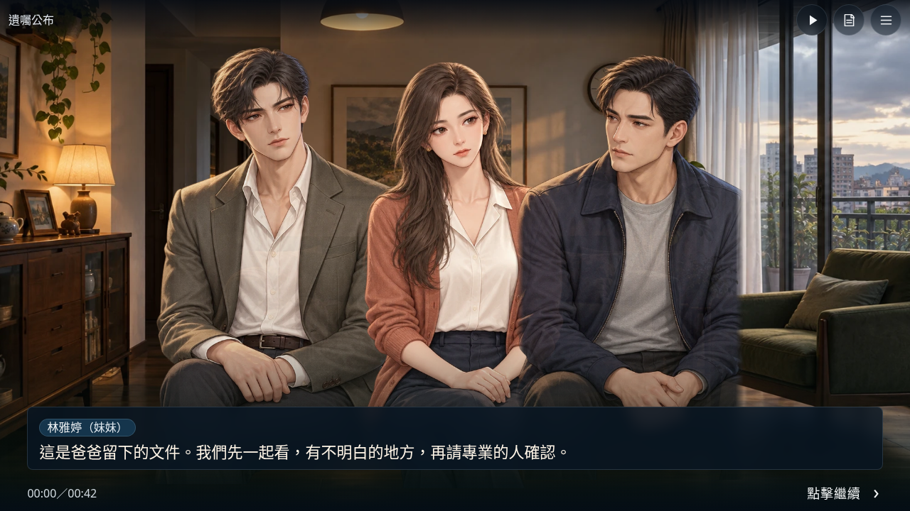
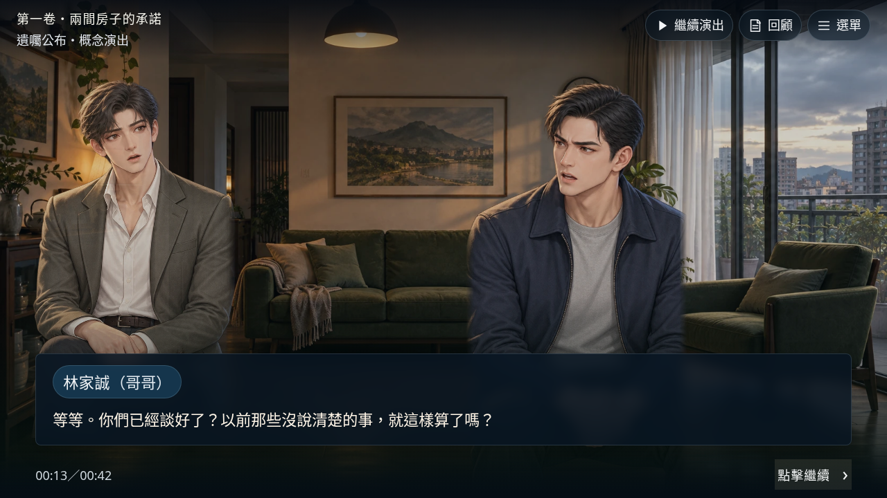
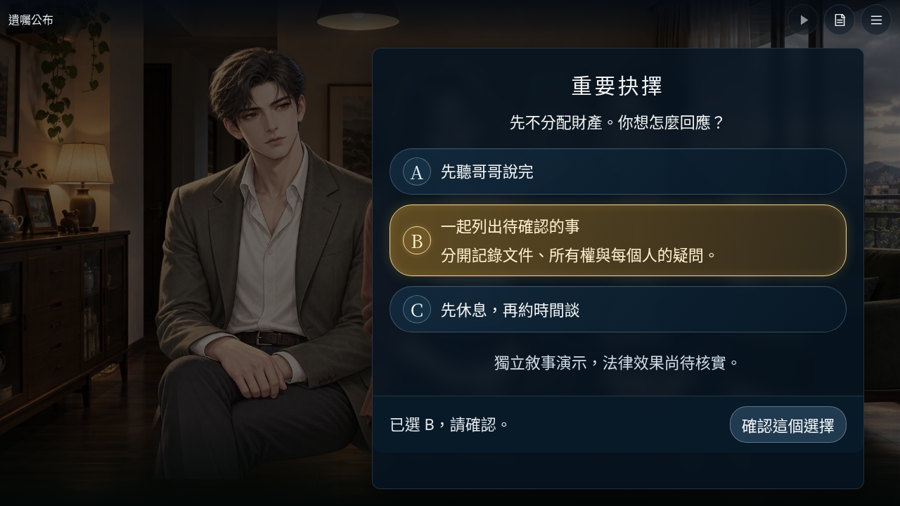
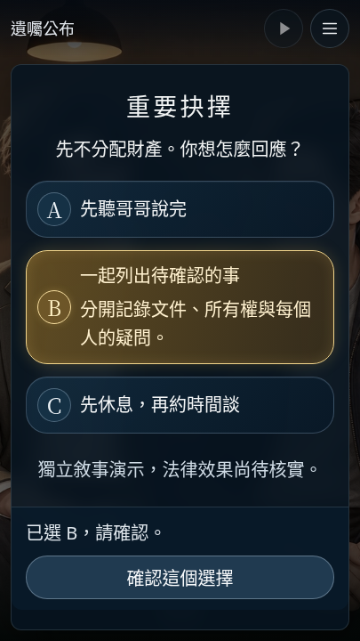

《遺囑公布》橫直雙模式單場景概念演出。原創AI概念佔位稿，尚未正式美術簽核；有限表情動畫，不是完整骨架或正式影集成片。
按「播放演出」觀看42秒，或「下一句」自由閱讀。旋轉裝置自動重新構圖，不重啟台詞與選取；最後停在A／B／C，按確認後才回應。
兩支皆為實際瀏覽器原速錄影，42秒演出加結尾停格，沒有配音。播放器上的44秒不是額外劇情或自動選擇。




此獨立場景不讀寫任何存檔；刷新會重置。正式經營模式、State v4、第一卷六次選擇八結局與既有人物樣機不變。法律、稅務與保險效果仍待核實，沒有分產、理賠、稅額或裁判計算。